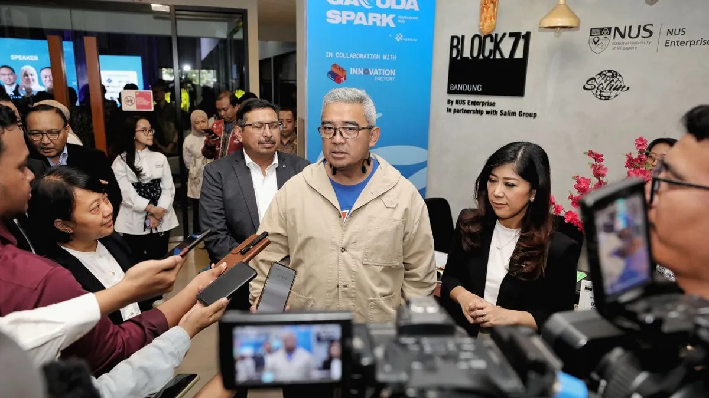

— Featured
Artikel Pilihan

Inovasi
15 Desember 2024
8 min read
Transformasi Pertanian 4.0: Garuda Spark Innovation Hub Medan Memimpin Revolusi Agritech
Teknologi kecerdasan buatan (AI) membawa transformasi besar dalam pertanian modern. Artikel ini membahas bagaimana implementasi AI di Smart Green House meningkatkan produktivitas hingga 300% dengan optimisasi yang presisi.

Nasabamedia--
Hudalil Mustakim